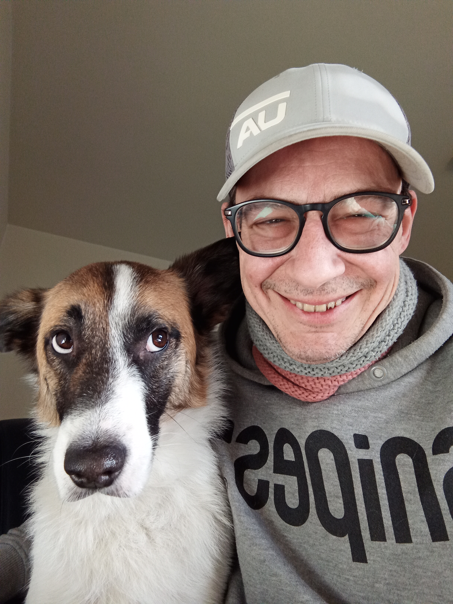

Mein Lebenslauf
Über mich!
Whats App Contact

Werdegang
Den überwiegende Teil Meines Lebens habe ich in Küchen oder Backstuben gearbeitet. Meine Lehre Habe ich als Konditor gemacht. Allerdings sehe ich in diesem Berufen keine Zukunft mehr. Deshalb habe ich mich vor 1,5 Jahren dazu entschieden meine Richtung zu wechseln. Ich begann mich für Computer und dem Programieren zu interessieren. Nicht gerade der leichteste Weg für mich. Erstens muste ich bei Null anfangen. Also begann ich mich mit Windows vertraut zu machen und auch mit den wichtigsten Arbeitsprogrammen wie Word und Exel. Danach habe ich die ICDL Prüfung I und II absolviert und bestanden. Seit dem befasse ich mich mit dem Programieren, angeleitet von der Codecademy, ein Onlinekurs. Leider lässt mein Englisch zu wünschen übrig, was die ganze Sache für mich erschwert. Das ist für mich so als ob ich eine Fremdsprache mit einer anderen Fremdsprache lernen muss. Aber ich habe die Herausvorderung angenommen und habe schon ein guten Fortschritt gemacht! Leider muss ich mit einer alten Möhre arbeiten, der 5 Minuten braucht nur um ein Programm zu öffnen. Ein bisschen nervig und hält mich auch ein wenig auf. Aber auch das wird mich nicht von meinem Ziel -Programierer zu werden- abringen!!